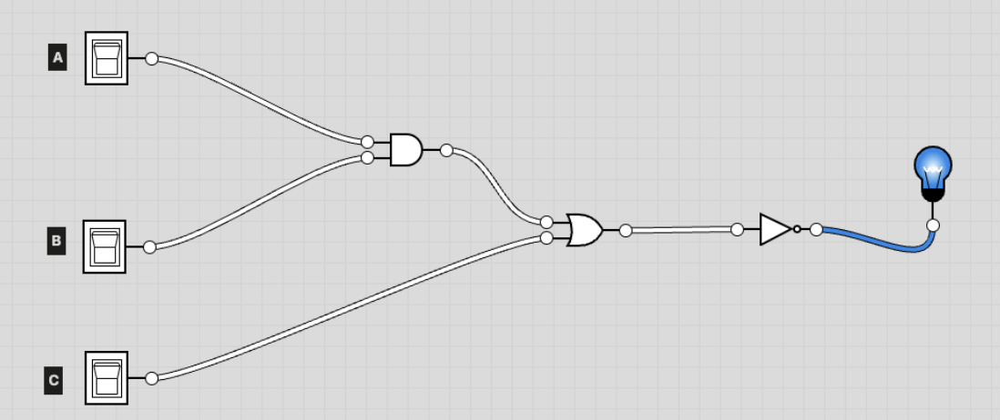
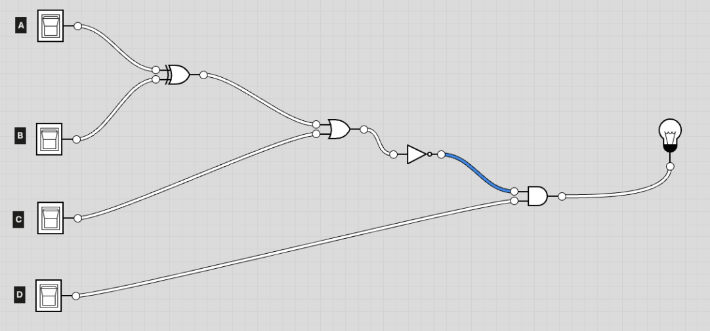

Unit 1
Circuits and Gates
[7.1] How are 1s and 0s represented in the hardware of a computer?
In hardware, bits are represented as electrical voltage. A high level of voltage is considered a 1; a low level of voltage is considered a 0.
[7.2] Why do we need gates? What do they do?
They are abstracted circuit components. They essentially have the same effect as a Boolean operation, but with bits as input/output instead of True/False values where 1 corresponds to True and 0 corresponds to False. They are used to control the flow of information.
[7.3] What is a half adder? Why do we use it? What is a full adder? Why do we use it?
The Half Adder is a type of logic circuit that adds two of the 1-bit binary digits together. When adding two numbers, we might need to carry an output over to the next column of the addition. This is why a half adder is useful. The Full Adder is also a type of logic gate that adds three inputs (3 bits) and produces two outputs. To add multiple bits together we can just chain together the full adder multiple times.
[7.4] What are the three basic gates? How do they operate at the high level?
- An AND gate takes two inputs and outputs 1 only if both inputs were 1.
- An OR gate takes two inputs and outputs 1 if either input was 1.
- A NOT gate takes one input and outputs the reverse (1 becomes 0, 0 becomes 1).
[7.5] Why do we need three representations (boolean expressions, circuits and truth tables)?
All three are different representations of logic; however, the representations for each accomplish a different goal.
-Boolean expressions provide a formal language for expressing logic (i.e., and, or, and not in Python).
-Circuits are concrete implementations of logic using physical or abstract components (i.e., in our CPU).
-Truth tables are a systematic way to analyze and verify the behavior of Boolean expressions or circuits (for our understanding).
[7.6] Convert the following boolean expressions to truth tables and circuits.
- not A
- A or B
- A and B
- (not A) or (B and C)
- not ((A and B) or (C or D))
For truth tables, you can use 1/0, or true/false, or T/F
Truth Table: not A
| A | not A |
|---|---|
| true | false |
| false | true |
Truth Table: A or B
| A | B | A or B |
|---|---|---|
| true | true | true |
| true | false | true |
| false | true | true |
| false | false | false |
Truth Table: A and B
| A | B | A and B |
|---|---|---|
| true | true | true |
| true | false | false |
| false | true | false |
| false | false | false |
Truth Table: (not A) or (B and C)
| A | B | C | not A | B and C | (not A) or (B and C) |
|---|---|---|---|---|---|
| true | true | true | false | true | true |
| true | true | false | false | false | false |
| true | false | true | false | false | false |
| true | false | false | false | false | false |
| false | true | true | true | true | true |
| false | true | false | true | false | true |
| false | false | true | true | false | true |
| false | false | false | true | false | true |
Truth Table: not ((A and B) or (C or D))
| A | B | C | D | (A and B) or (C or D) | not ((A and B) or (C or D)) |
|---|---|---|---|---|---|
| true | true | true | true | true | false |
| true | true | true | false | true | false |
| true | true | false | true | true | false |
| true | true | false | false | true | false |
| true | false | true | true | true | false |
| true | false | true | false | true | false |
| true | false | false | true | true | false |
| true | false | false | false | false | true |
| false | true | true | true | true | false |
| false | true | true | false | true | false |
| false | true | false | true | true | false |
| false | true | false | false | false | true |
| false | false | true | true | true | false |
| false | false | true | false | true | false |
| false | false | false | true | true | false |
| false | false | false | false | false | true |
Truth Table: (A or (B and (not C))) and (C and B and (not A))
| A | B | C | not C | B and (not C) | A or (B and (not C)) | C and B and (not A) | (A or (B and (not C))) and (C and B and (not A)) |
|---|---|---|---|---|---|---|---|
| true | true | true | false | true | true | false | false |
| true | true | false | true | false | true | false | false |
| true | false | true | false | false | true | false | false |
| true | false | false | true | false | true | false | false |
| false | true | true | false | false | false | false | false |
| false | true | false | true | false | false | false | false |
| false | false | true | false | false | false | false | false |
| false | false | false | true | false | false | false | false |
[7.7] Write the boolean expression and truth table for the circuit below. 
Boolean expression: not ((A and B) or C)
| A | B | C | (A and B) or C | not ((A and B) or C) |
|---|---|---|---|---|
| true | true | true | true | false |
| true | true | false | true | false |
| true | false | true | false | true |
| true | false | false | false | true |
| false | true | true | true | false |
| false | true | false | false | true |
| false | false | true | false | true |
| false | false | false | true | false |
[7.8] Write the boolean expression and truth table for the circuit below. 
Boolean expression: (not ((A xor B) or C)) and D
| A | B | C | D | A xor B | (A xor B) or C | not ((A xor B) or C) | (not ((A xor B) or C)) and D |
|---|---|---|---|---|---|---|---|
| true | true | true | true | false | true | false | false |
| true | true | true | false | false | true | false | false |
| true | true | false | true | true | true | false | false |
| true | true | false | false | true | true | false | false |
| true | false | true | true | true | true | false | false |
| true | false | true | false | true | true | false | false |
| true | false | false | true | true | true | false | false |
| true | false | false | false | true | true | false | false |
| false | true | true | true | true | true | false | false |
| false | true | true | false | true | true | false | false |
| false | true | false | true | false | false | true | true |
| false | true | false | false | false | false | true | true |
| false | false | true | true | false | true | true | true |
| false | false | true | false | false | false | true | true |
| false | false | false | true | false | false | true | true |
| false | false | false | false | false | false | true | true |